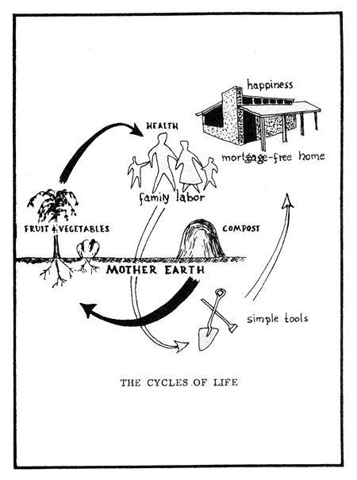

How To Build Your Own Solar - Heated House For Pennies
A brief introductory guide to solar heating, its possibilities and how to construct a home that takes advantage of them.
The Mother Earth News editors
January/February 1976
...Or if there's anything new under the sun, we ain't heard about it yet
...Or we miss you, Mr. S.R. house... wherever you are
Look at the photo of the model house which accompanies this article. Ain't it a beauty? Well it should be because this is absolutely the latest thing in self-sufficient eco-living.
First off, the residence has walls of solid earth and its doors, windows, and other such accessories are largely recycled from older buildings and wrecking yards. Which means that the dwelling is designed for do-it-yourself, minimum cost, pay-as-you-go, spare time construction. There's not more than a thousand dollars' worth of store bought material in the entire structure, and that means the whole place should be fully paid for the day you move in. No 30-year mortgages here!
And no big heating or cooling bills either. Because the home is almost entirely self-insulated the natural way (with earthen walls 14 inches thick when built in Florida and 27 inches wide if the residence is constructed in Canada). Provisions have also been made to warm the dwelling's interior with solar energy during the winter and to otherwise regulate the climate of its rooms lithospherically-with the constant underground temperatures of the planet itself throughout all four seasons of the year.
As if that weren't enough, the home shown here is largely food self-sufficient too. It has a greenhouse (solar heated, of course) and other "grow yer own" production facilities incorporated into its design.
Yep. Ain't no doubt about it. This is the house of the future that today's eco-movement pioneers have been trying to design for gosh knows how long. And here it is-finally!-as modern as tomorrow. The latest thing., that is, except for one small fact: This particular residence was designed hefore some of today's "eco-pioneers" were horn!
Back in November of 1946, you see, John Edward Kirkham Research Professor of Civil Engineering at Oklahoma Agricultural and Mechanical College published a little 40-page booklet entitled How to Build Your Own Home of Earth. It was originally issued as Bulletin No. 54 of the Oklahoma Engineering Experiment Station but quickly proved so popular (the "boys" were coming home from World War II and wanted to get married and settle down in a little place of their own and there wasn't enough building material to go around and so earthen construction was enjoying a mini boom) that it was reissued as Publication No. 61. And, I guess, reissued and reissued and reissued.
Well, somewhere along the way, a copy of How to Build Your Own Home of Earth fell into the hands of a fellow by the name of S.R. House. And, right off, S.R. could see the logic of building a home of earth: do-it-yourself construction that any average Joe and his family could handle on an evening-and-weekend basis. No mortgages. No termites. No worry about fires. No need to insulate the basic building with "add on" weatherproofing. Etc., etc., etc.
As a matter of fact, S.R. liked the idea of do-it-yourself earthen houses so well, that-by 1948-he had founded something in Indianapolis called Mammoth Cave Homes, Inc., which used as its motto, "Earth Homes Built on Top of the Ground".
Nor did Ole S.R. stop there. No sirry. Within a few years he had figured out that an earthen house-with its big, thick walls that both insulated and regulated its inside temperature was an ideal candidate for solar heat. (Sorry, Steve Baer S.R. was 20 years ahead of you!)
S.R. also took that solar heating idea one step further and incorporated enough of a greenhouse right into his dirt based dwelling to make the residence food self-sufficient (or dang near to it). And, from there, it was only a short step to worm pits for the recycling of the building's plant and animal wastes into fertilizer for the live-in garden. (Are you listening, Jim DeKorne?)
Yeah. S.R. House went on even further. On to whole cooperative communities of his self-contained dwellings (he was ahead of MOTHER'S Eco-Village too, you see) and Lord knows what all. The schematic that accompanies this article gives some idea of his all-encompassing ideas for living on/from/ with the land/soil/earth that supplies us with everything we really need.
Anyway, to make a long story short, a Mrs. W. Casey of Granby, Missouri brought all this to our attention a few months back when she sent MOTHER a small packet of S.R.'s printed material. And we did our darndest to track Ole S.R. down but his trail peters out around 1957 and we can't find anything about/by/from him after that date.
So, as matters now stand, we extend a Great Big Thank You to Mrs. Casey for her kindness. And our admiration to S.R. House for predating the current generation's eco technology work by at least 2(? years. And we do kinda wonder S.R., where are you now?
|
 |
 |
|